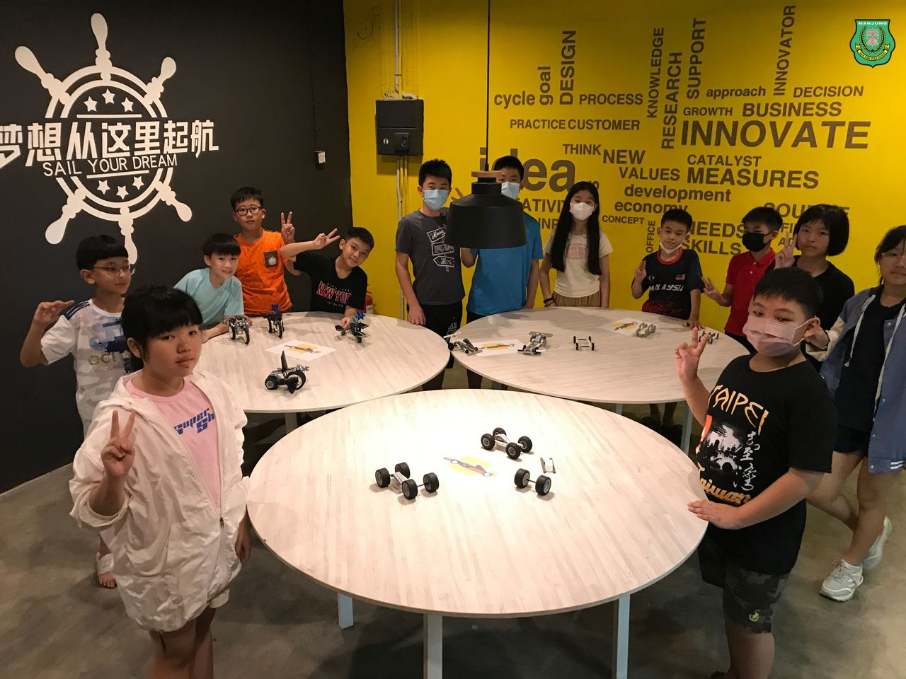
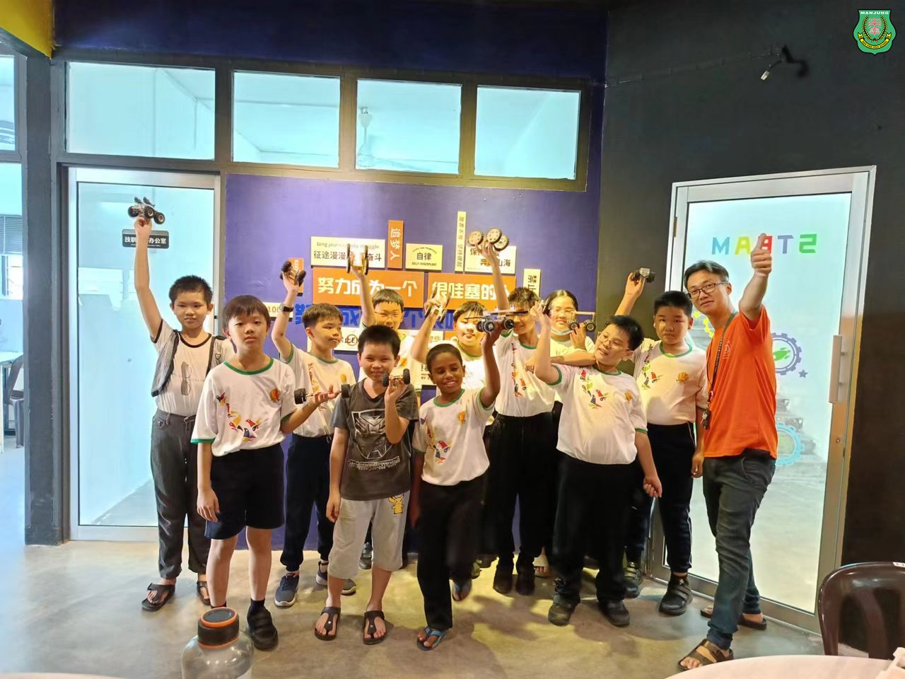
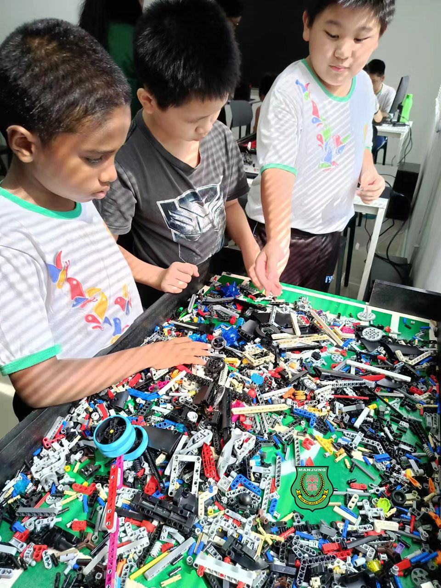
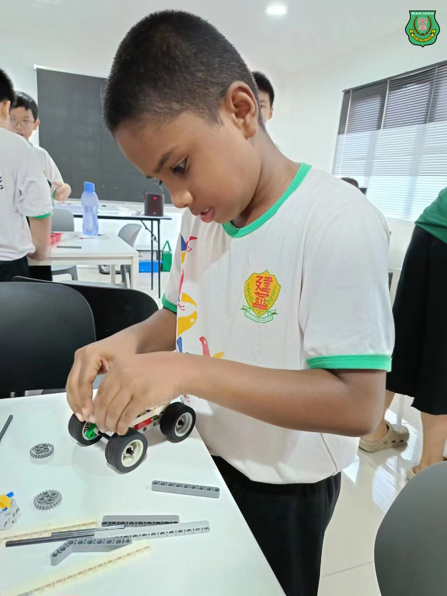
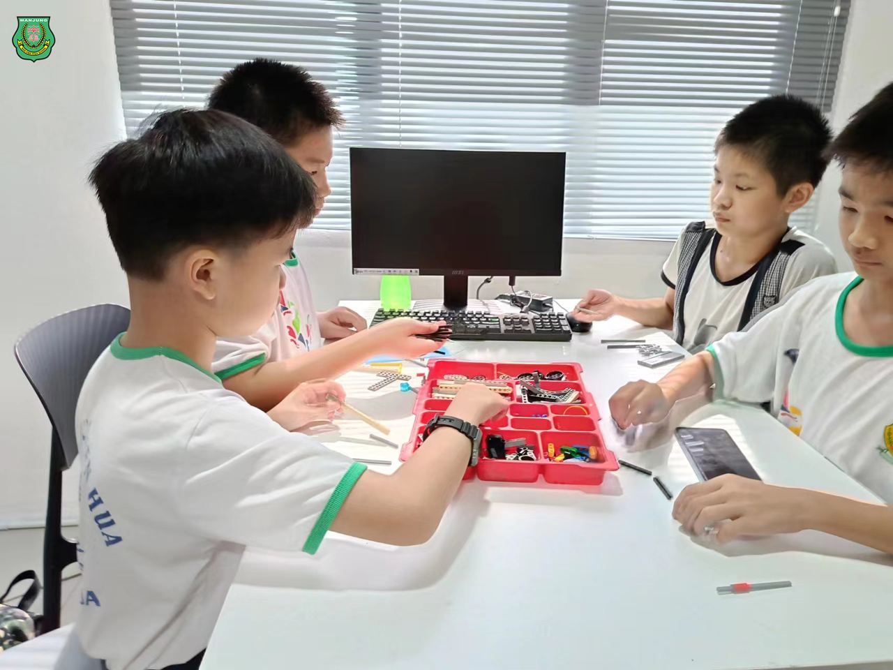
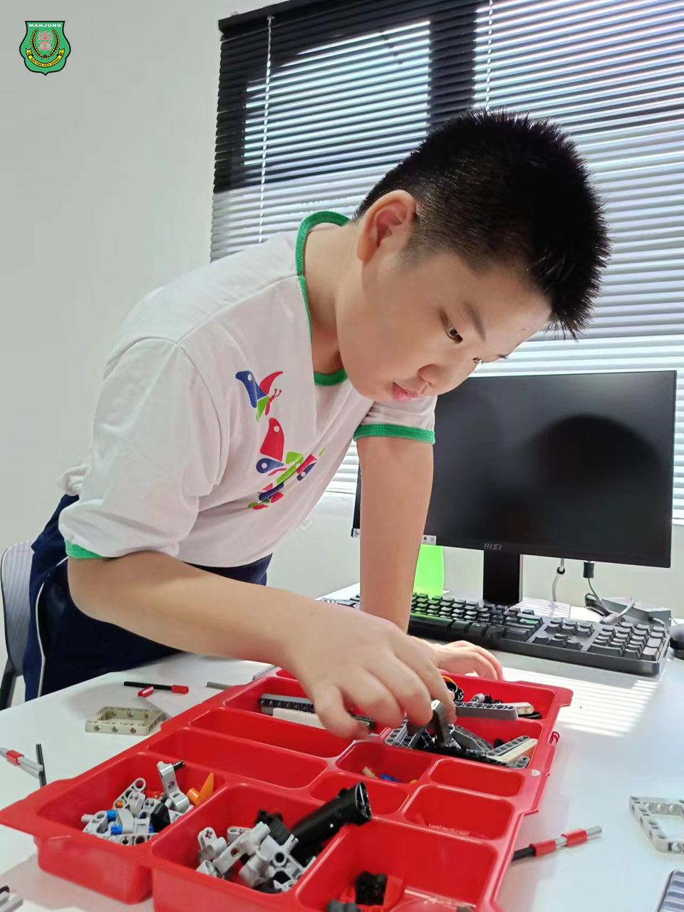
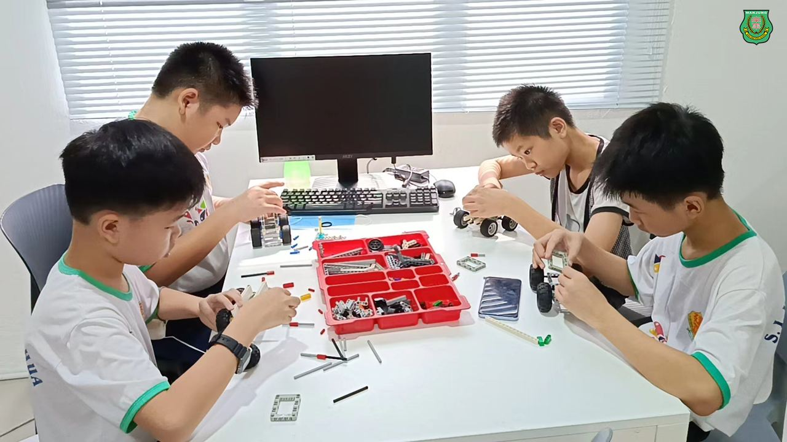
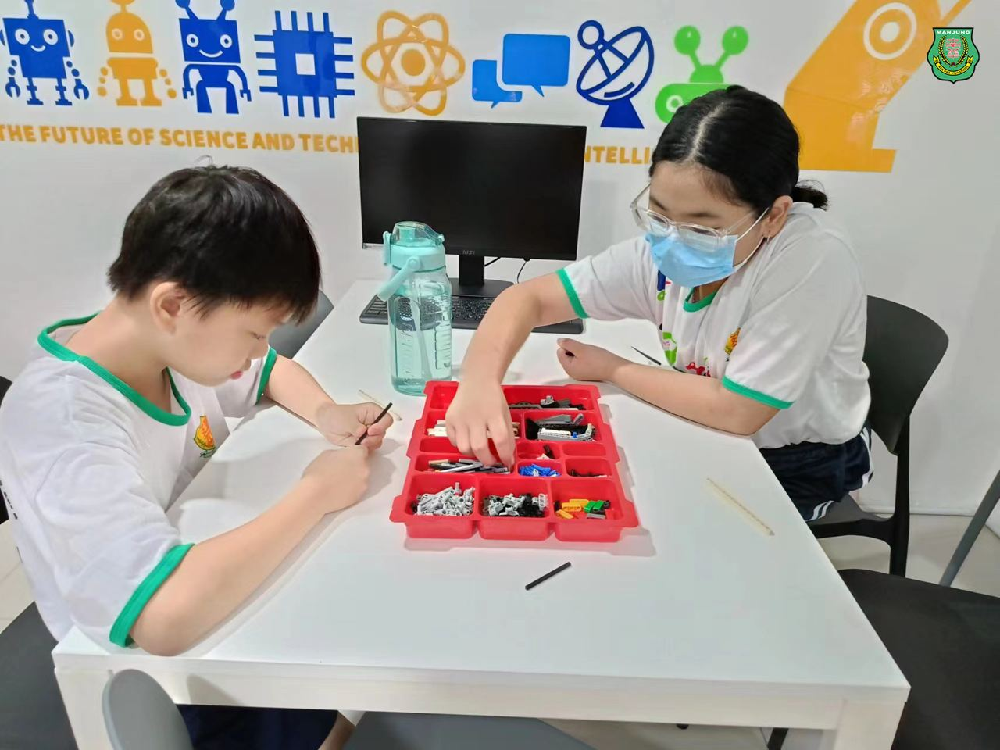

南华独中开办"机器人课室"
南华独中开办"机器人课室"
落实教育资源共享理念，培养创新人才
基于"美美与共，世界大同"的办学愿景，曼绒南华独立中学技职教育中心特此开办面向曼绒县华小5-6年级学生的"机器人课室"，课程全免学费，旨在落实教育资源共享的美好理念。
"机器人课室"课程分为"赛车班"和"无人驾驶班"，来自曼绒县华小学生于4月份开课后，受益匪浅，纷纷给出积极正面的评价。每每提早抵达课室现场，迫不及待课程的开始。
南华独中校长陈丽冰博士指出，向社区共享优质教育资源正是"美美与共,世界大同"愿景的具体实践。陈校长强调，每个孩子犹如一颗种子，蕴藏着长成参天大树的无限潜，,而教育正是灌溉这些种子、帮助他们茁壮成长的契机。南华独中希望通过开放教育资源，为曼绒县更多学子插上腾飞的翅膀。
该校技职教育中心主任万顺华老师表示，技职教育是未来教育的趋势和关键所在。他说："当我们将混龄教育应用于机器人教育时,我们不仅仅是在传授知识,更是在培养学生的团队合作、沟通技巧和创新思维。通过与不同年龄段的同学一起工作，学生可以相互启发，共同解决问题，培养出更全面的技能和更广阔的视野。这种跨年龄的合作不仅推动了机器人技术的发展，也为培养未来创造力和适应力强的人才打下了坚实基础。"目前受惠的两所华小分别是二条路建华华小以及姐妹校福清洋育英华小。
#美美与共世界大同 #机器人课室 #教育资源共享
#南华独中 #曼绒 #实兆远







